Landscape Photography
This is one of the most popular types of photography, as it can portray a scenery, or can even show an impact of environmental change. We all love to capture a beautiful landscape when we see one. However, we need to wait for the right light to capture that perfect moment.
 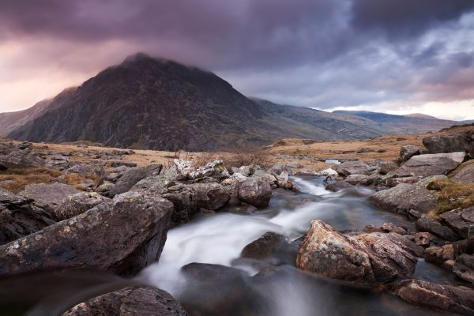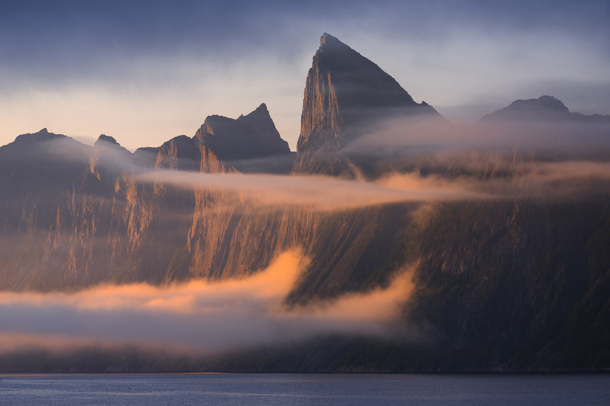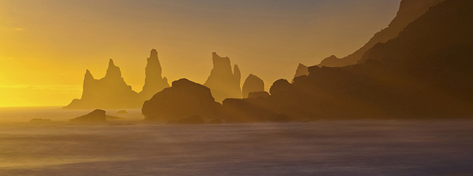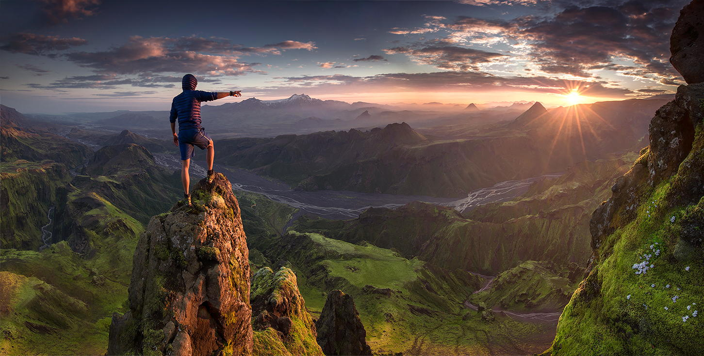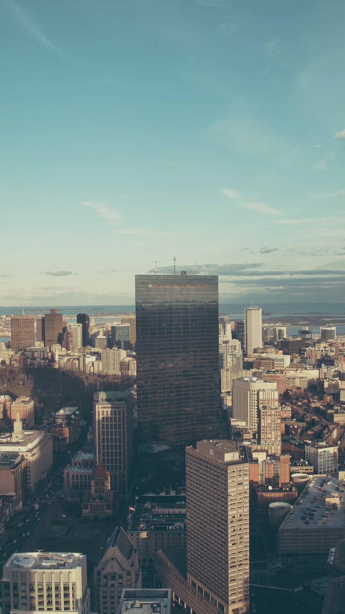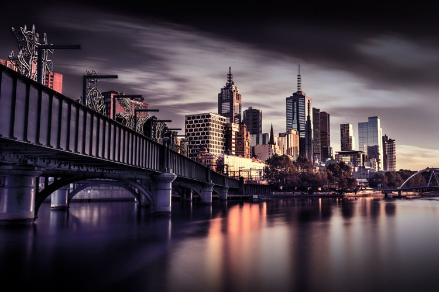
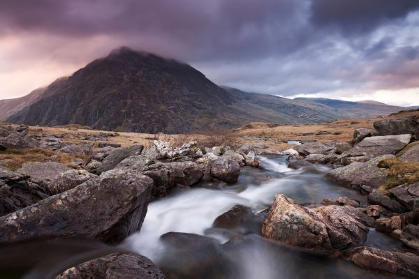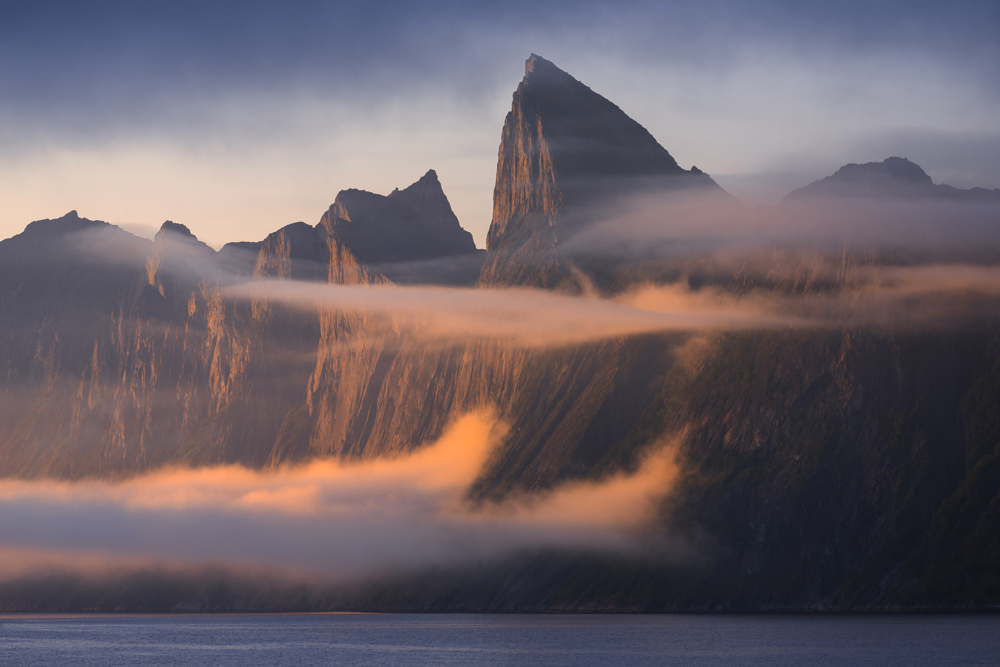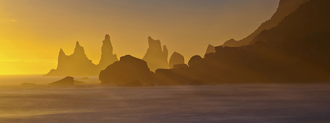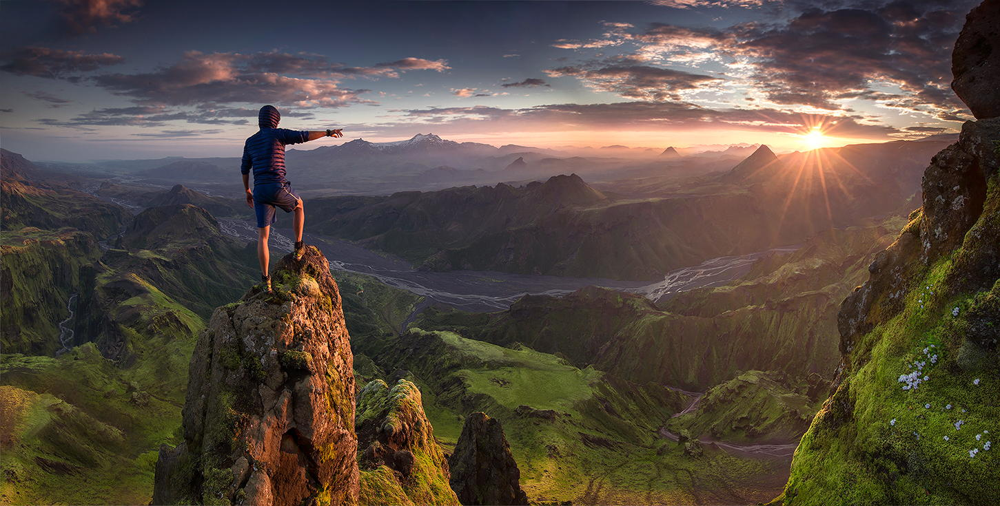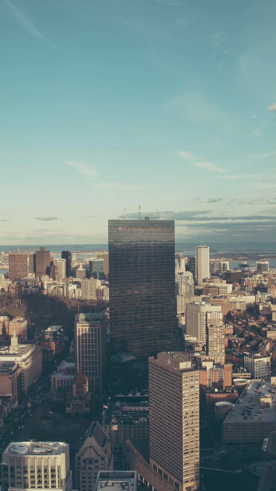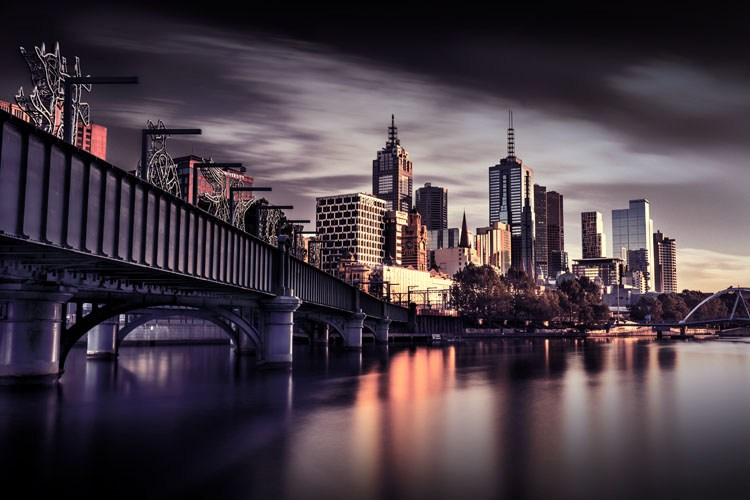
Landscape photography can divide into two categories which are:
| Urban Landscape | Nature Landscape |
|---|---|
| Urban landscapes go beyond the capturing of the big picture cityscape that is usually quote polished and clean. | Nature photography is a broad category that can range from landscapes to seascapes, or from wildlife to flowers and bugs. |
While shooting a landscape, if you want a sharp image, use a tripod which will help eliminate the camera shakes. Using a long shutter speed can give you the perfect shot. For example, if you are capturing the waves, it will turn to a smooth white and moving clouds will turn wispy.